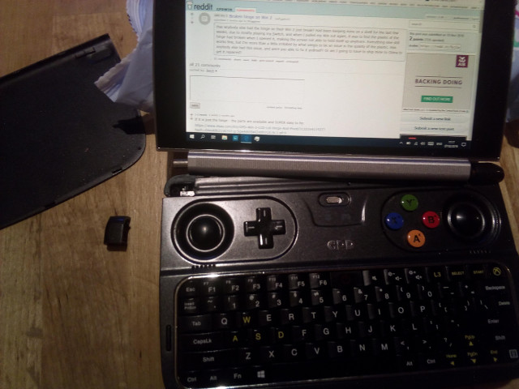
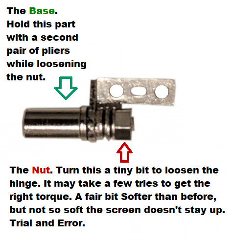
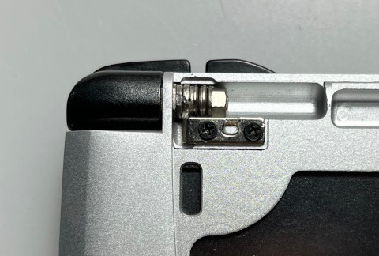
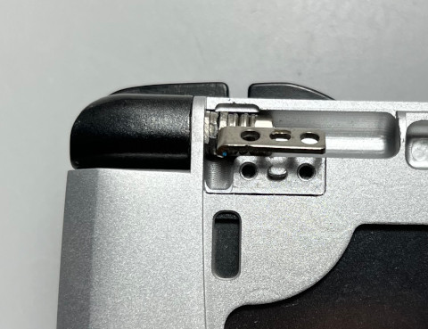
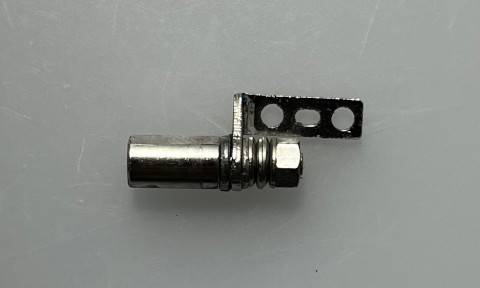

參考資料：
https://www.reddit.com/r/gpdwin/comments/bpv7dp/gpd_win2_how_to_loosen_your_gpdwin2_hinge/
https://www.reddit.com/r/gpdwin/comments/ao64n0/gpdwin2_hinge_broke_my_gpd_win2_plastic_holder/
為了避免鉸鏈太緊，導致外殼斷裂




